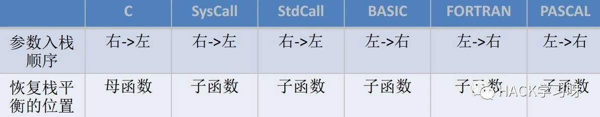
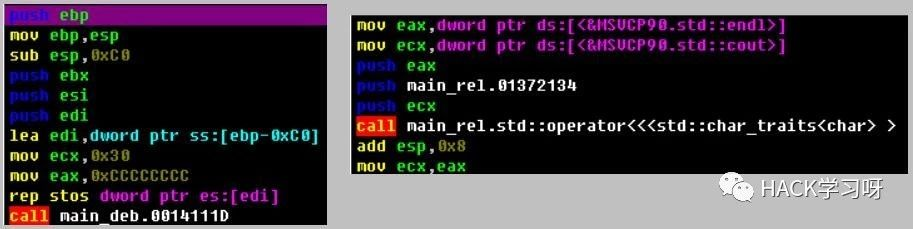
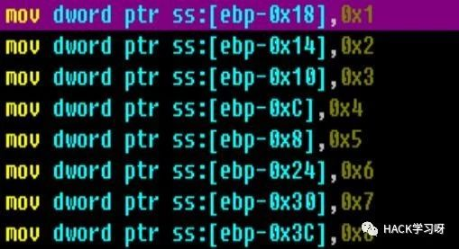

软件逆向基础
调试逆向技术
动态分析技术：指的是使用调试工具加载程序并运行。
随着程序运行，调试者可以随时中断目标的指令流程，以便观察相关计算的结果和当前的设备情况。
静态分析技术：是相对于动态分析而言的。
由于在实际分析中，很多场合不方便运行目标（例如病毒程序，设备不兼容，软件的单独某一模块）。那么这个时候静态分析技术就该上场了！
反编译
汇编语言还原成高级语言。通常不能把可执行文件变成高级语言源代码，只能转换成汇编语言。语言越高级，反编译的难度就越大。
反汇编
机器指令还原成汇编代码。
常用逆向工具
Ollydbg、 Windbg、 SoftICE、IDA、 PEiD、 W32Dasm、 C32asm等等。
Ollydbg、 Windbg是动态分析调试器，但Ollydbg不能调试内核，所以是工作在ring3层。
IDA是很强大的静态反汇编工具，虽然功能强大，但是操作很复杂。
栈的原理
从计算机科学的角度来看，栈是一种数据结构，它的存储规则是先进后出。栈结构在计算机中是一片连续的存储空间，且是向下生长的，即由大向小排列。系统中通过两个寄存器来表示一个堆栈。 esp和ebp， esp是栈顶寄存器，ebp是栈底寄存器。栈的操作：push和pop，push是压入操作，pop是弹出操作。
函数调用过程
参数入栈：将参数按照调用约定依次入栈。
返回地址入栈：将当前代码区调用指令的下一条指令地址压入栈，供函数返回时继续使用。
代码区跳转：从当前代码区跳转到被调用函数的入口处。
栈帧调整：保存当前栈帧的状态值，已备后面恢复本栈帧时使用。将当前的栈帧切换到新的栈帧。给新栈帧分配空间。
下面是_stdcall调用约定的一个函数调用的例子：
push 参数3；
push 参数2；
push 参数1；
call 函数地址；这里call指令将完成两个工作：1.返回地址入栈2.跳转到被调用的函数地址。
push ebp；保存旧栈帧的底部
mov ebp，esp；设置新栈帧的底部
sub esp，xxx；为新的栈开辟空间
函数返回的过程：
1.保存返回值：通常将函数的返回值保存在eax寄存器中。
2.弹出当前栈帧，返回下一个栈帧。在堆栈平衡的基础上，给esp加上栈帧的大小，降低栈顶，回收当前栈帧的空间。将当前栈帧底部保存的前栈帧ebp值弹入ebp寄存器，恢复出上一个栈帧。将函数返回地址弹给eip寄存器。
3.跳转：按照函数返回地址跳回母函数中继续执行。
函数返回时的关键序列：
add esp，xxx；降低栈顶，回收当前的栈帧
pop ebp；将上一个栈帧底部恢复到ebp
retn；这条指令有两个功能：1.弹出栈帧中的返回地址，完成栈帧的恢复工作。2.跳回弹出的返回地址，继续下面的执行。
函数参数入栈顺序：

下面用一个实际的例子来介绍函数的调用：
|
|
编译方式的识别
VC
VC的编译方式有Debug和Release方式。
Debug：通常称为调试版本，它包含调试信息，并且不作任何优化，便于程序员调试程序。
Release：称为发布版本，它往往是进行了各种优化，使得程序在代码大小和运行速度上都是最优的，以便用户很好地使用。
Debug版与Release版的区别：
1.Debug版会初始化内存为CC，而Release版不会。

2.Debug版会使用一个检查堆栈平衡的函数checkesp，而Release版不需要。
数组的识别
数组是相同数据类型的数据集合，以线性方式存储在内存中。其数据排列顺序是由低到高，数组的名称表示该数组的首地址。

流程控制语句的识别
if语句
先进行比较指令，再通过条件跳转命令来执行。
；先执行各类影响标志位的指令，如cmp
；其后是各种跳转指令
jxx xxxx
if…else语句
先进行比较指令，然后判断条件跳转到if的分支代码处，执行完成后采用无条件跳转指令（ jmp）跳转到else分支的结束代码处。
switch语句
先进行比较指令，然后执行跳转，但与if的多分支语句的区别是：switch语句将比较指令放在一起，后面的case模块是放在一起的。
；获取switch中考察的变量值
；先执行各类影响标志位的指令，如cmp
jxx xxx1
；先执行各类影响标志位的指令，如cmp
jxx xxx2
；先执行各类影响标志位的指令，如cmp
jxx xxx3
xxx1:
……
jmp end
xxx2:
……
jmp end
xxx3:
……
jmp end
while语句
先进行判断，成功则进行循环体执行，否则跳出循环。
while_begin:
；影响标志位的指令
jxx while_end
……
jmp while_begin
while_end:
常见的汇编指令介绍
cmp a,b；比较a与b
mov a,b；把b值送给a值，使a=b
ret；返回主程序
nop；无作用
call；调用子程序，子程序以ret结尾
je或jz；相等则跳（机器码是74或84）
jne或jnz；不相等则跳（机器码是75或85）
jmp；无条件跳（机器码是EB）
jb；若小于则跳
ja；若大于则跳
jg；若大于则跳
jge；若大于等于则跳
jl；若小于则跳
pop xxx；出栈
push xxx；压栈

文章参考来源：Note's博客